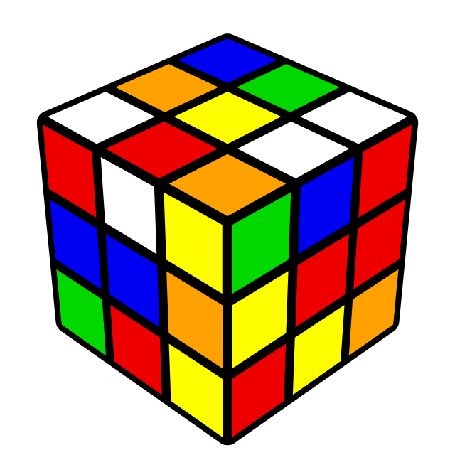

<!--

Author: Sean Limqueco

Last Date Modified: May 21, 2023

Base code referenced from:
> https://www.w3schools.com/html/default.asp
> https://getbootstrap.com/docs/4.4/components/alerts/

-->

<DOCTYPE! html>

<html>
  <head>
    <meta charset="UTF-8">
    <title>Cube It — Home</title>
    
    <link rel="icon" type="image/x-icon" href="CubeIt_images/favicon.ico">
    <link rel="stylesheet" href="general_style.css">

  </head>

  <body>
    <nav>
      <a href="#" class="home-link" onClick="prevImage()">&laquo;</a>
      <a href="cube_it_learn.html" class="home-link">Learn from Scratch!</a>
      <a href="cube_it_solve.html" class="home-link">Solve Now!</a>
      <a href="cube_it_history.html" class="home-link">History</a>
      <a href="#" class="home-link" onclick="nextImage()">&raquo;</a>
    </nav>

    <h1>Cube IT!</h1>

    <div class="carousel">
      
            
      
      
    </div>

    
    <script>
      // JavaScript for carousel in the body because carosel needs to be initialized
      // first before it can work.
      const carousel = document.querySelector('.carousel');
      const images = carousel.getElementsByTagName('img');
      let currentIndex = 0;

      // only show the first image by default
      images[0].style.display = 'block';
      images[1].style.display = 'none';
      images[2].style.display = 'none';
      images[3].style.display = 'none';

      // function to show the previous image
      function prevImage() {
        images[currentIndex].style.display = 'none';
        currentIndex = (currentIndex - 1 + images.length) % images.length;
        images[currentIndex].style.display = 'block';
      }

      // function to show the next image
      function nextImage() {
        images[currentIndex].style.display = 'none';
        currentIndex = (currentIndex + 1) % images.length;
        images[currentIndex].style.display = 'block';
      }

      // function to flip images repeatedly
      let intervalId = setInterval(nextImage, 5000);

      // stop flipping images when arrow buttons are clicked
      const carouselBtns = document.querySelectorAll('.carousel-btn');
      for (let i = 0; i < carouselBtns.length; i++) {
        carouselBtns[i].addEventListener('click', function() {
          clearInterval(intervalId);
        });
      }
    </script>
  </body>

</html>